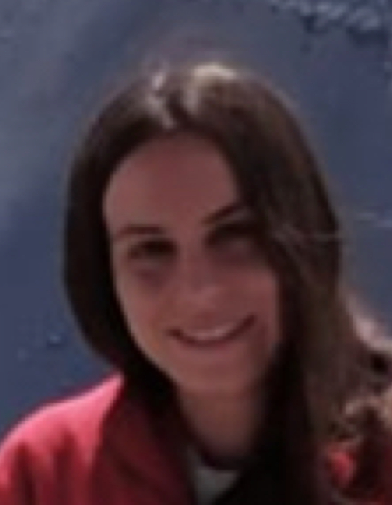
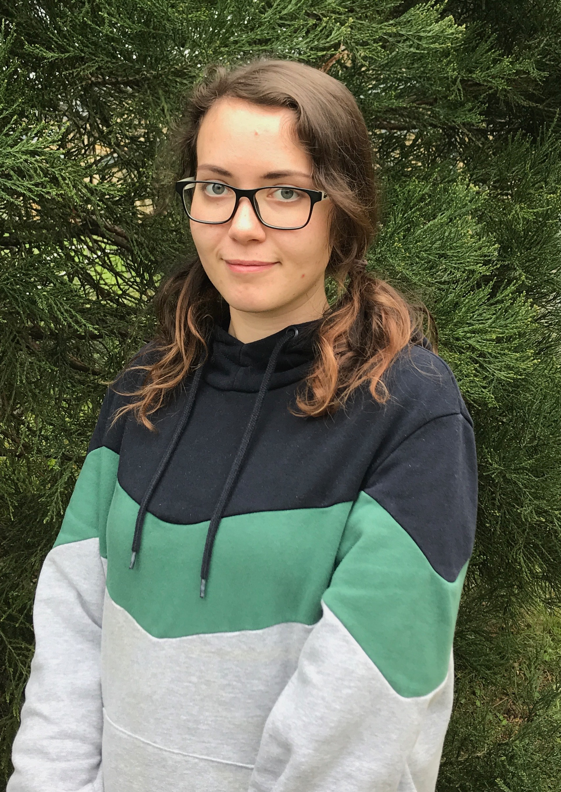
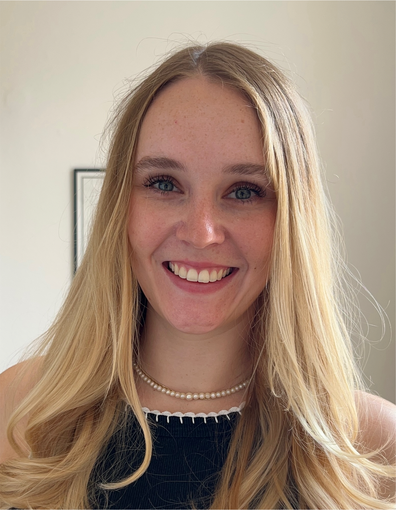

Group leader
Ph.D. Leonardo Oña

- Senior Research Fellow; Department of Ecology , University of Osnabrück
Education:
- MSc in Biology, University of Córdoba, 2006
- MSc in Theoretical Physics, Instituto Balseiro, 2007 (Advisor: Guillermo Abramson)
- PhD in Theoretical Biology, Max Plank Institute for Evolutionary Anthropology & University of Leipzig, 2014 (Advisors: Michael Lachman, Svante Pääbo)
- Postdoc, University of Groningen, 2013-16 (Advisor: Sander van Doorn)
GitHub:
Google Scholar:
ResearchGate:
PhD students
MSc Maria Kostakou (co-advised with Dr. Stephanie Jurburg)

- PhD student, Microbial Interaction Ecology , Helmholtz Centre for Environmental Research- Leipzig
Education:
- MSc in Biotechnology, Agricultural University of Athens, 2019
Research Interest: Spatial assembly in soil microbial communities across scales, land cover, and land use
Master students
BSc Anna Milchin

Education:
- BSc in Ecology, University of Osnabrück, 2020
Research Interest: The role of demographic stochasticity and space affecting chaotic dynamics and the paradox of the phytoplankton
BSc Badis Gazbar

Education:
- BSc in Neurobiology, University of Düsseldorf, 2020
Research Interest: Constitutive and induced responses in host-parasite interaction networks
BSc Nele-Carolin Sommer

Education:
- BSc in Ecology, University of Osnabrück 2023
Research Interest: Understanding the influence of species-specific dispersal rates and interaction partners on ecological network structure
Bachelor students
Finn Dinnus

Research Interest: The fitness effects of partner loss in free-living mutualistic associations